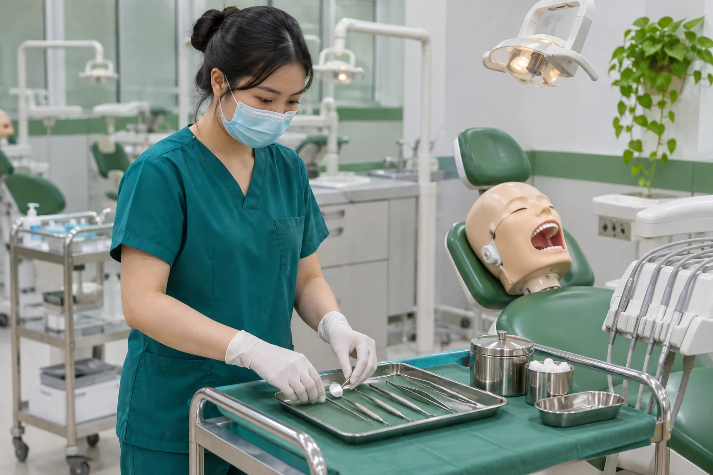
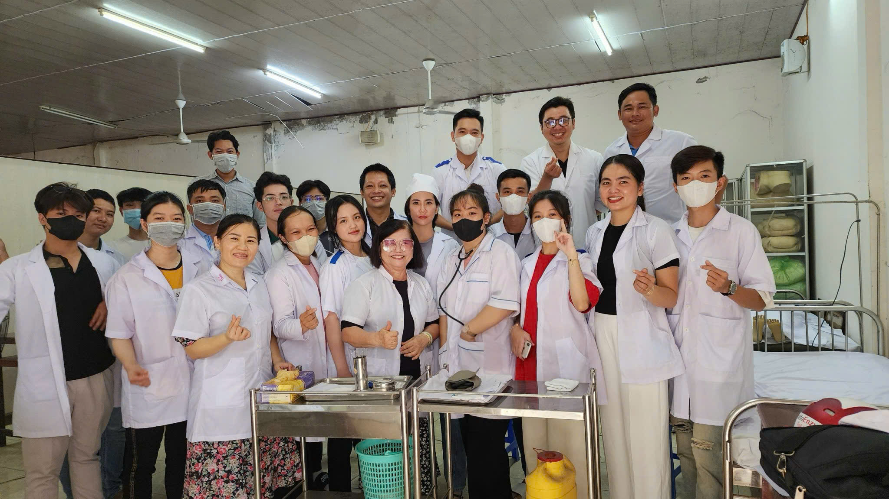
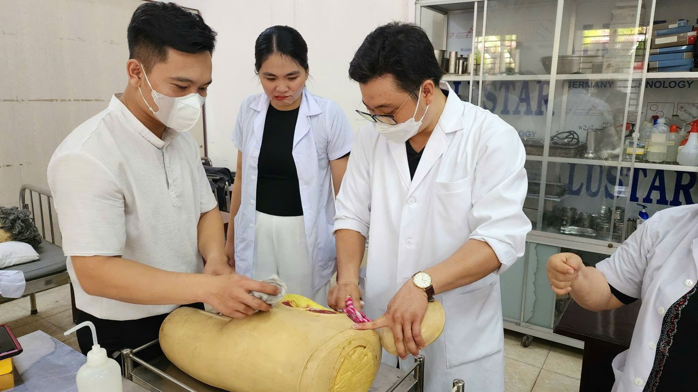
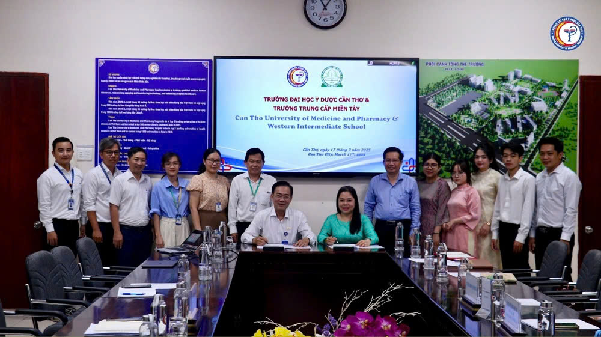

Trường Trung cấp
Miền Tây
Sổ tay tuyển sinh 2026
Trường Trung cấp
Miền Tây
Sổ tay tuyển sinh 2026
Vì sao chọn nghề chăm sóc
Chăm sóc sức khỏe là nghề mà kết quả lao động nằm ở người khác: một lời động viên, một thao tác kỹ thuật đúng, một liều thuốc được tư vấn cẩn thận đều trực tiếp tác động đến sức khỏe và niềm tin của người bệnh.
Sổ tay này tổng hợp sáu chương trình sức khỏe của nhà trường để bạn so sánh, chọn đúng hướng đi và biết rõ mình sẽ học gì, làm gì sau khi tốt nghiệp.
Ba chương trình trung cấp và ba chương trình sơ cấp / chứng chỉ — chạm vào từng dòng để mở trang chi tiết.
Trình độ trung cấp
Lưu ý hành nghề: Người được cấp bằng Y sĩ trung cấp sau 31/12/2026 không được cấp giấy phép hành nghề với chức danh Y sĩ (khoản 10 Điều 121).
Y học cơ sở & lâm sàng — bệnh học, nguyên tắc y đức, nhận định ban đầu.
Kỹ thuật thăm khám — sơ cứu và xử trí ban đầu theo quy định.
Thực hành tại cơ sở y tế — hỗ trợ chăm sóc sức khỏe cộng đồng.
Trình độ trung cấp
Học dược lý, bào chế, kiểm nghiệm và quản lý thuốc.


Dược lý & dược lâm sàng — cách dùng thuốc an toàn, hợp lý.
Bào chế & kiểm nghiệm — quy trình và tiêu chuẩn chất lượng thuốc.
Bảo quản & quản lý dược — sắp xếp, bảo quản theo chuẩn, đạo đức hành nghề.
Trình độ trung cấp
Chăm sóc người bệnh trong phòng bệnh, điều trị và phục hồi.

Quy trình kỹ thuật điều dưỡng — thực hành cơ bản và kỹ năng theo dõi.
Chăm sóc & giao tiếp — hỗ trợ người bệnh, phối hợp cùng nhân viên y tế.
Y đức & trách nhiệm — thái độ tận tâm trong suốt quá trình học.
Hỏi lịch mở lớp
Tìm hiểu giải phẫu răng hàm mặt và thực hành kỹ thuật hỗ trợ nha khoa.

Giải phẫu – sinh lý vùng răng hàm mặt, nguyên tắc vô khuẩn.
Kỹ thuật hỗ trợ nha khoa — chuẩn bị dụng cụ, vật liệu, theo dõi điều trị.
Chăm sóc răng miệng — hướng dẫn và tư vấn dự phòng cho người bệnh.
Hỏi lịch mở lớp
Hướng bổ sung kiến thức điều dưỡng cho người đã có văn bằng phù hợp. Hỏi trường về điều kiện của từng đợt.

Hệ thống kiến thức điều dưỡng cơ sở và các quy trình kỹ thuật.
Thực hành theo dõi, chăm sóc và phối hợp trong nhóm điều trị.
Y đức, giao tiếp và an toàn người bệnh theo quy định.
Hành nghề điều dưỡng cần đáp ứng điều kiện cấp giấy phép.
Hỏi lịch mở lớp

Học xoa bóp, bấm huyệt và làm quen với thiết bị vật lý trị liệu.
An toàn & chỉ định — nguyên tắc trước khi xoa bóp, bấm huyệt.
Kỹ thuật cơ bản — thực hành trên từng vùng cơ thể.
Thiết bị vật lý trị liệu — quy trình hỗ trợ phục hồi chức năng.
Ba ngành trung cấp chính quy
Cùng nền tảng sức khỏe, khác nhau ở trọng tâm đào tạo và nơi làm việc.
| Tiêu chí | Y sĩ | Dược | Điều dưỡng |
|---|---|---|---|
| Trọng tâm | Y học cơ sở & lâm sàng | Dược lý, bào chế | Quy trình chăm sóc |
| Kỹ năng | Thăm khám, sơ cứu | Bảo quản, tư vấn thuốc | Kỹ thuật điều dưỡng |
| Hướng việc làm | Cơ sở y tế, tùy điều kiện hành nghề | Nhà thuốc, khoa dược | Bệnh viện, cơ sở chăm sóc |
| Học lên | Dự tuyển theo ngành và điều kiện của cơ sở tiếp nhận. | ||
| Thời gian | 1,5 năm sau THPT hoặc tương đương · 2,5 năm sau THCS, có học văn hóa THPT. | ||
Quan tâm đến y học cơ sở và chăm sóc sức khỏe ban đầu.
Thích thuốc, hóa dược và tư vấn dùng thuốc.
Muốn chăm sóc người bệnh trực tiếp mỗi ngày.
Lý thuyết gắn thực hành
Khối sức khỏe không thể học chỉ bằng lý thuyết. Chương trình tổ chức theo hướng thực hành là trung tâm, gắn với cơ sở y tế.

Phòng thực hành kỹ năng — luyện thao tác trên mô hình trước khi tiếp xúc người bệnh.
Thực tập tại cơ sở y tế — làm quen bệnh viện, phòng khám, nhà thuốc.
Rèn y đức & giao tiếp — thái độ, trách nhiệm với người bệnh.
Vị trí tùy văn bằng, giấy phép hành nghề và yêu cầu tuyển dụng
Chăm sóc sức khỏe ban đầu, phòng bệnh cộng đồng.
Hỗ trợ thăm khám và theo dõi người bệnh.
Thực hiện quy trình chăm sóc theo phân công.
Bảo quản và hướng dẫn sử dụng thuốc trong phạm vi chuyên môn.
Xoa bóp, bấm huyệt, vật lý trị liệu.
Hỗ trợ chăm sóc người cao tuổi theo vị trí chuyên môn.
Ai có thể đăng ký
Điều kiện đầu vào khác nhau theo chương trình; phòng tuyển sinh kiểm tra và hướng dẫn từng trường hợp cụ thể.
Người tốt nghiệp THCS học song song chương trình văn hóa THPT.
Hỏi về lớp ban ngày, buổi tối hoặc cuối tuần.
Hỏi về lộ trình văn bằng 2 và điều kiện theo ngành.
Hỏi trường về hồ sơ và điều kiện hỗ trợ học nghề.
Phiếu đăng ký xét tuyển theo mẫu của trường.
Bản sao bằng tốt nghiệp và học bạ hoặc giấy chứng nhận tốt nghiệp tạm thời theo hướng dẫn.
CCCD, giấy khai sinh, ảnh 3×4 và giấy khám sức khỏe.
Xem hồ sơ theo từng đợt tại trang tuyển sinh của trường.
Minh bạch trước khi nộp
Học phí công bố theo từng đợt tuyển sinh.
Xem mức thu của ngành và đợt tuyển sinh bạn chọn.
Hỏi thời hạn, cách đóng và các khoản thu theo thông báo.
Hỏi điều kiện và giấy tờ cần nộp nếu thuộc diện hỗ trợ.
Gọi hotline để được giải thích từng khoản và lộ trình học.
Đối chiếu thông báo thu trước khi đóng học phí.
Hỗ trợ người ở xa — tư vấn chỗ ở, đi lại khi nhập học.
Hỏi về thực tập theo ngành và kế hoạch của từng lớp.
Thông tin học phí và hỗ trợ theo thông báo từng đợt.
Lộ trình dài hơi
Người có bằng trung cấp có thể tìm hiểu lộ trình học lên theo ngành, văn bằng đầu vào và quy định tuyển sinh của cơ sở tiếp nhận.
Hoàn thành trung cấp và nhận bằng khi đủ điều kiện tốt nghiệp. Giấy phép hành nghề có thủ tục và điều kiện riêng.
Tìm việc theo chuyên môn và điều kiện của vị trí tuyển dụng.
Liên thông cao đẳng / đại học — theo quy định tuyển sinh của trường đào tạo.
Bồi dưỡng chuyên môn theo yêu cầu của công việc và quy định hiện hành.
Điều kiện liên thông thay đổi theo quy định từng năm — nhà trường tư vấn trường hợp cụ thể.
Lịch học và thực hành
Lịch học: Hỏi lớp ban ngày, buổi tối hoặc cuối tuần và kiểm tra lịch từng học kỳ.
Thực hành: Hỏi trường về địa điểm, thời gian và yêu cầu chuẩn bị theo từng ngành.
Xác nhận lịch cụ thể với Phòng Tuyển sinh trước khi đăng ký.
Sáu câu hỏi thường gặp
Hợp tác & liên kết


Bệnh viện & cơ sở y tế — môi trường thực tập cho điều dưỡng, y sĩ.
Nhà thuốc đạt chuẩn GPP — thực hành dược và tư vấn thuốc.
ĐH Y Dược Cần Thơ · CĐ Nghề Cần Thơ — hợp tác chuyên môn theo văn bản năm 2025.
Hợp tác quốc tế — khai giảng các lớp cho học sinh Campuchia năm 2025.
Tư vấn miễn phí

Tri thức · Đạo đức · Hội nhập · Phát triển
130C–130D Nguyễn Văn Cừ nối dài, P. Tân An, TP. Cần Thơ